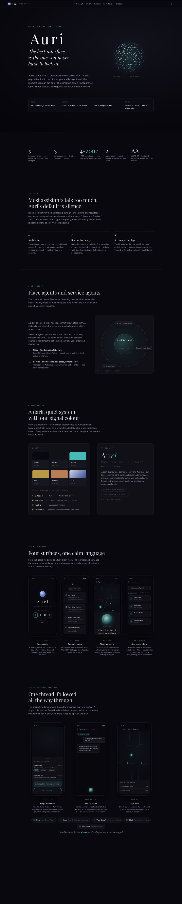

Case studyAuri
Spatial audio · UK“The best interface is the one you never have to look at.”
A voice-first, geo-aware guide for the city — designed and built in Claude Code, from concept to a working, deployed prototype. It carries the lineage of Microsoft Soundscape.
View full case study →